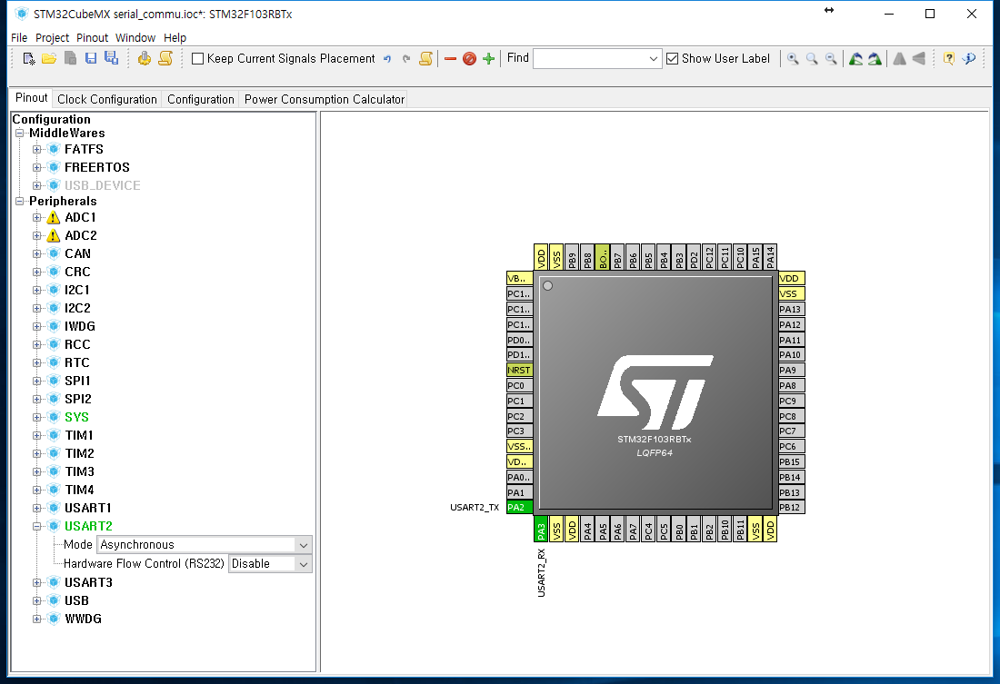
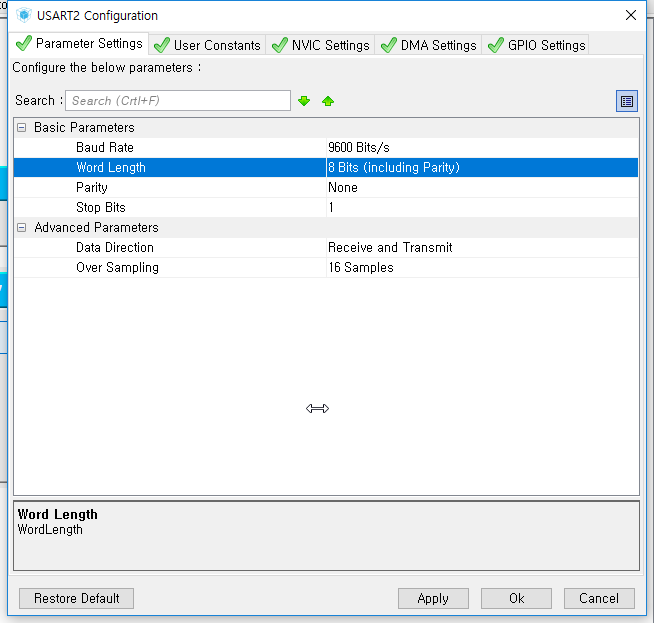
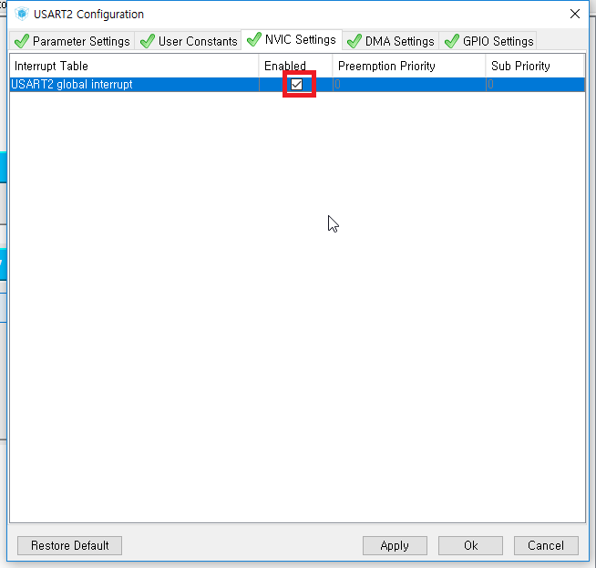
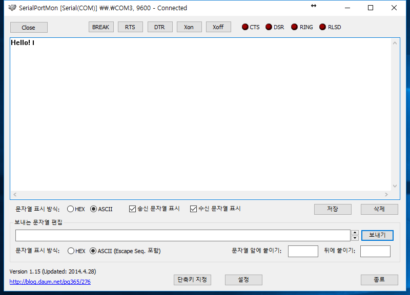
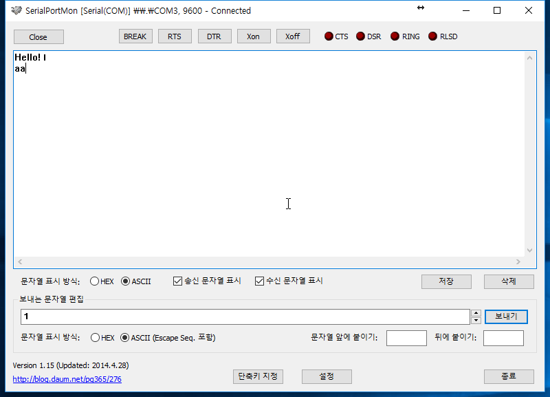
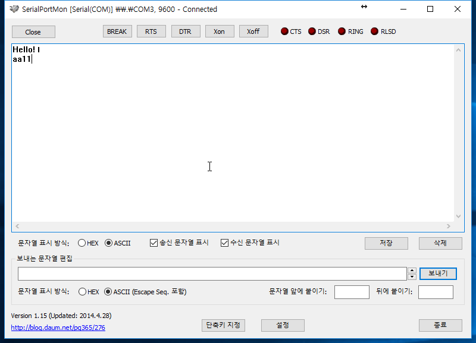

시리얼 통신 - 송수신
USART 통신을 이용하여 기본적인 송수신을 해 보도록 하겠습니다.
NUCLEO f103rb에는 USART통신을 최대 3채널까지 사용할 수 있습니다.
이중 usb단자로 연결되어 있는 USART2번 채널을 이용하여 시리얼 통신을 해 보도록 하겠습니다.
STM32Cube
USART2의 Mode를 Asynchronous로 설정해 줍니다.

Configuration에서 USART2를 눌러 설정창으로 들어갑니다.
Parameter Settings에서 Baud Rate를 9600으로 바꿔줍니다.

NVIC Settings에서 global interrupt를 Enabled 해줍니다.

이제 코드를 생성(톱니바퀴)해 줍니다.
uVision5
HAL_UART_Transmit 함수와 HAL_UART_Receive 함수를 사용합니다.
USER CODE BIGIN 2 밑에 아래 변수들과 함수를 추가해 줍니다.
/* USER CODE BEGIN 2 */
HAL_StatusTypeDef RcvStat ;
uint8_t bufftx[10] = "Hello!\n" ;
uint8_t UsartData[10] ;
HAL_UART_Transmit(&huart2, bufftx, 10, 100) ; // send start data
USER CODE BIGIN 3 에는 아래와 같이 추가해 줍니다.
/* USER CODE BEGIN 3 */
RcvStat = HAL_UART_Receive(&huart2, UsartData, 1, 100) ; // receive data
if (RcvStat == HAL_OK) { // receive check
HAL_UART_Transmit(&huart2, UsartData, 1, 100) ; // send received data
}
업로드 한 후 Serial 통신이 가능한 프로그램을 실행합니다.
통신속도를 9600bps로 맞추고 장치관리자에서 보드의 COM 번호를 확인 후 연결합니다.
RESET 버튼을 눌러 보드를 재시작하면 Hello! 문자가 나옵니다.

여기에 문자열을 보내면 보낸 그대로 돌아옵니다.

